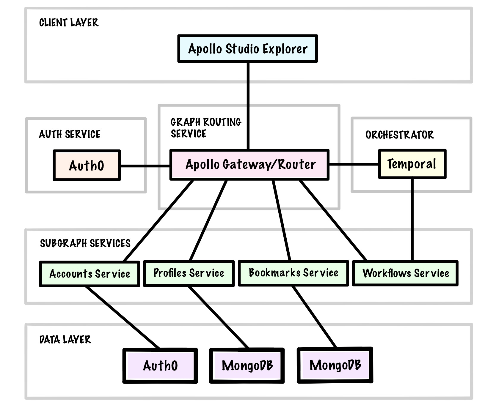

Preface
Welcome to the second edition of Advanced GraphQL with Apollo! I’m very excited that you’ve chosen this book to broaden your GraphQL skill set.
GraphQL was invented at Facebook in 2012 and was publicly launched in 2015. Since then, it has opened up a world of new possibilities for API design and consumption. Today, it has been famously adopted by companies including The New York Times, Shopify, Coursera, AirBnB, GitHub, and Netflix. It has also inspired countless open source projects related to it, including the popular suite of Apollo tools for working with GraphQL APIs in both client and server applications.
And as adoption has expanded so have the demands on what is possible with a GraphQL API, especially when it’s used to support distributed application architectures. GraphQL shines in how it allows you to consolidate data from multiple sources in field resolver functions to support specific client use cases. But over time, and as more and more teams begin to contribute to a monolithic GraphQL schema, the schema evolution process can become a choke point in everyone’s development process. Alternatively, bluntly dividing type definitions between teams and manually reconsolidating those definitions into a single schema for clients to query may be easier said than done because type and field boundaries can be imprecise.
The initial Apollo Federation specification offered a compelling solution to these challenges. It allows a schema to be divided based on separation of concerns and then declaratively composed into a single GraphQL API. The second version of the Apollo Federation specification—made generally available in 2022—augments these features with a more flexible composition model to make iterative schema evolution among teams even easier. The chapters that follow will explore many of those features.
What’s Inside
This book covers a wide range of topics relevant to developing distributed GraphQL APIs from scratch with JavaScript and it does so using a practical, project-based approach. Working through this book from start to finish will leave you with a relatively full-featured GraphQL API that resolves data from several different back-end services.
Specific topics covered throughout the book include:
- Composing multiple subgraph schemas into a single GraphQL API using Apollo Gateway
- Adding authentication to a Node.js application with Express middleware and Auth0
- Adding authorization to a GraphQL API using a series of custom type system directives
- Creating custom Scalar types to share across subgraph schemas
- Using Apollo data sources to fetch data in resolvers
- Implementing Relay-style pagination for data from MongoDB
- Securing and optimizing the performance of a GraphQL API
- Using an orchestrator to coordinate mutations across multiple subgraphs
- Using the next-gen Apollo Router as an alternative to Apollo Gateway
In its exploration of these topics, this book is divided into 10 chapters. Chapters 1 to 6 focus on building out three core services that will provide data for the API. Chapters 7-10 focus on more advanced topics including performance and security considerations, mutation orchestration, managed federation, and the Rust-based Apollo Router.
Because of the intermediate nature of the content, this book does not cover the basics of Node.js, or MongoDB and assumes some prior exposure to GraphQL.
Who Should Read this Book
This book covers more advanced topics than a typical introductory GraphQL book or course, but the topics are presented in an accessible way by building up code examples piece-by-piece with explanations in the supporting text. That said, before proceeding, consider if you have at least:
- Intermediate knowledge of JavaScript (including ES2015+ features of the language)
- Previous exposure to GraphQL, such as basic schema design concepts, using a GraphQL API to read and write some data before, and creating a resolver function in Apollo Server
- Experimented with Node.js and MongoDB in the context of web application development
- Some awareness of the advantages of GraphQL APIs compared to other options (there’s no preamble GraphQL sales pitch in this book—we’re going to jump right into code)
If those qualifications sound like they describe you, then you’re in the right place. By the time you have finished this book, you’ll feel confident using advanced features of Apollo Server and Apollo Federation and applying what you learn here to complex, real-world development scenarios.
Getting the Most from this Book
To get the most from your experience reading this book I encourage you to work through each chapter chronologically because the code in each chapter builds on the previous one. This book is structured sequentially around building out a distributed GraphQL API from scratch.
If you intend to build out the demonstration application as you work through the chapters, I also encourage you to explicitly type out as much of the code that you encounter as possible rather than simply copying and pasting snippets. In my experience, taking the time to intentionally type out code examples aids comprehension and builds mental muscle memory.
Of course, if you’re working on another GraphQL-based project right now and are in search of insights or code examples for any of the aforementioned topics, each chapter of this book also stands alone in building out a coherent chunk of functionality for the application. You will almost certainly find that various chapters serve as helpful reference points for that work too.
Formatting Conventions
Code Blocks
In favor of brevity, some code examples are truncated where code that was previously added to a file doesn’t change in the context of a new update to that file. Additionally, file diffs are highlighted in code examples to enhance readability and filenames are added above the code blocks in italics, where applicable. For example:
gateway/src/index.js
import http from "http";
import app from "./config/app.js";
import initGateway from "./config/apollo.js";
const port = process.env.PORT;
const httpServer = http.createServer(app);
const gateway = initGateway(httpServer);
await gateway.start();
gateway.applyMiddleware({ app, path: "/" });
await new Promise(resolve => httpServer.listen({ port }, resolve));
console.log(`Gateway ready at http://localhost:${port}${gateway.graphqlPath}`);
Inline Code
Code and filenames that are referenced inline (for example, within a paragraph or list item) are rendered in this monospaced font to distinguish them from the other text.
Info Boxes
Supplementary notes and additional tips related to the main content are presented in gray boxes throughout the chapters as follows:
You can find a current version of the GraphQL specification here: http://spec.graphql.org/
Quotes
Longer sections of text directly quoted from another source are delineated with a gray border to the left of the quote:
The best programs are written so that computing machines can perform them quickly and so that human beings can understand them clearly. A programmer is ideally an essayist who works with traditional aesthetic and literary forms as well as mathematical concepts, to communicate the way that an algorithm works and to convince a reader that the results will be correct.
—Donald E. Knuth, Selected Papers on Computer Science
Package Versions
For compatibility purposes, package versions are specified wherever you are instructed to install a package from npm. You may wish to experiment with updated package versions as they become available, but compatibility with the other code in this book cannot be guaranteed.
Reference Source Code
The complete source code for the application built throughout this book may be accessed at:
https://github.com/8bitpress/advanced-graphql-source-code-v2
Required Software
Node.js
To build the application as outlined in the chapters that follow you will need to have Node.js 16.x or higher installed on your computer. You can download the latest LTS version of Node.js for your operating system here:
https://nodejs.org/en/download/
MongoDB
Two of the back-end services implemented in our application will use MongoDB as a database, so you will need to install MongoDB Community Edition 4.2 or higher as well. Download the latest version of MongoDB for your operating system here:
https://docs.mongodb.com/manual/administration/install-community/
Docker
Mac or Windows
Docker is used in Chapters 8 and 10. If you’re using a Mac or Windows computer, then you can download Docker Desktop to install all of the software needed to run Docker here:
https://docs.docker.com/install/
You will need to sign up for a free Docker Hub account to download this software. Docker Desktop installs everything you need to run Docker locally, including Docker Engine, the Docker CLI client, Docker Compose, and a dashboard interface for managing Docker containers.
Linux
If you’re using Linux, then you’ll need to refer to the Docker documentation (using the link above) for details on how to install Docker Engine for your preferred distribution.
You will also need to install Docker Compose for Linux separately afterward:
https://docs.docker.com/compose/install/
Rover CLI
The Rover CLI is used to compose a supergraph schema locally, publish schemas to Apollo Studio for use with managed federation, and check proposed schema changes against known operations.
Mac or Linux
To install the specific version of Rover used in this book for Mac or Linux, run this command:
curl -sSL https://rover.apollo.dev/nix/v0.6.0 | sh
Windows
On Windows machines, run this command to install Rover via the Windows PowerShell Installer:
iwr 'https://rover.apollo.dev/win/v0.6.0' | iex
Verify Installation
Once installed for either Mac/Linux or Windows as instructed above, you should be able to run the following command:
rover --version
And see the following output in the terminal:
Rover 0.6.0
Optional Software
To assist with development you may also wish to download and install a GUI for interacting with MongoDB, such as MongoDB Compass:
https://www.mongodb.com/products/compass
Lastly, if you use VS Code as an editor, then also consider installing the Apollo GraphQL extension to enhance your development experience with features such as GraphQL syntax highlighting:
https://marketplace.visualstudio.com/items?itemName=apollographql.vscode-apollo
The Game Plan
Once the required software is installed, you’re ready to start coding in Chapter 1. In the pages that follow, we will build out a federated GraphQL API for Marked, which is a throwback, Web 2.0-inspired social bookmarking application. Marked users can save public and private bookmarks, add users to their network, and search for other users and public bookmarks using full-text search. As we build Marked, we’ll use Apollo Studio Explorer to test out all of the queries and mutations that we add to the schema.
Structurally, Marked will consist of a gateway-level Apollo Server instance that routes incoming GraphQL requests from clients to four different subgraph schemas. Subgraphs can be implemented using a variety of different GraphQL servers in many different languages, but we will stick with Apollo Server to power all of the subgraph services as well. In the final chapter of the book, we will swap out the Node.js-based Apollo Gateway for the new Rust-based Apollo Router.
Beyond these open-source libraries from Apollo, we will also use Auth0 to provide the authentication layer for the API and store basic user account data, MongoDB will be used as a database for two other services that manage user profile data and bookmarks data, and Temporal will be used to orchestrate cascading deletion of user account data across subgraphs. We will also use Apollo Studio as a schema registry and for viewing operation traces and metrics.
Our project’s architecture can be visualized as follows:

The journey of 1,000 miles begins with a single npm install, so onward to building our first subgraph schema with Apollo Federation!